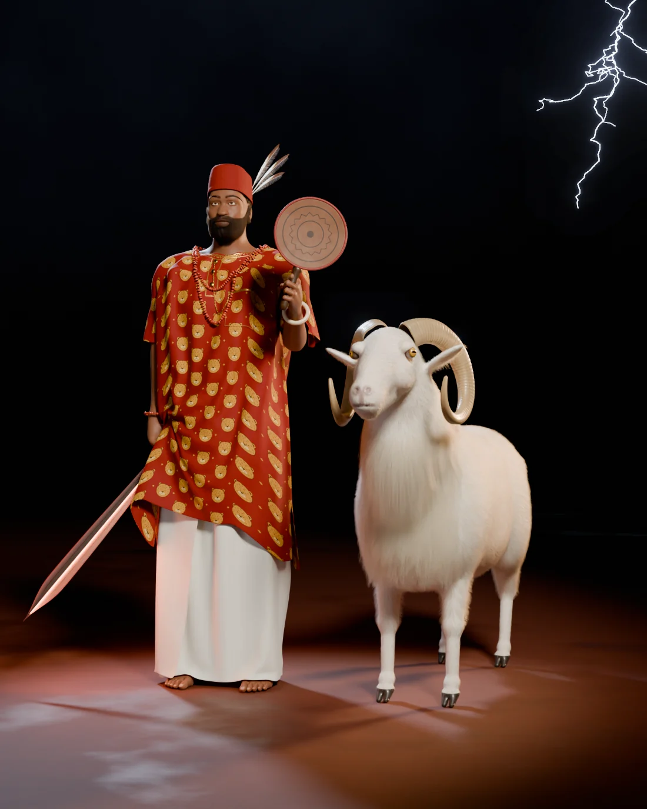
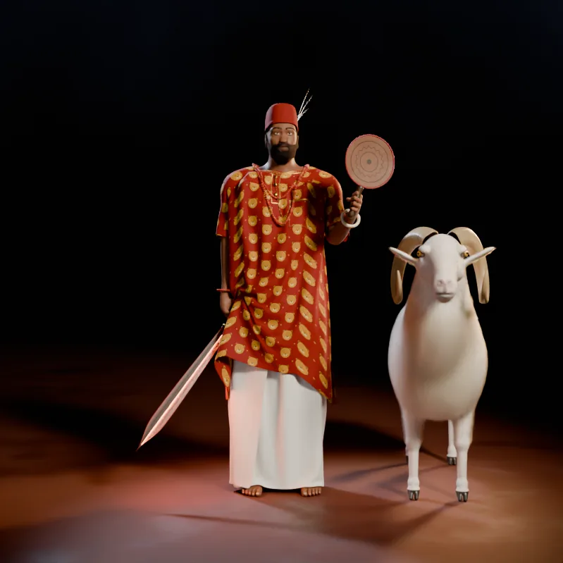

Igbo alụsị of thunder, lightning and justice
A photoreal study that shows him both ways the sources do: a fair-skinned titled gentleman of cool temper, in a red isiagụ and white wrapper with his sword lowered, and beside him the gigantic white ram said to be his only physical form.

Drag across the picture, use the slider, or focus it and press the arrow keys. Thirty-six views, ten degrees apart, rendered under the same lights as the pair turns.

Loading views 0 / 36
Amadioha and the ram side by side: coral and gold buttons on the isiagụ, the sword lowered at his right, the akupe raised at his left.
His right side in profile, with the ram in full profile behind him from horns to tail and the fan held out in front.
The leopard heads stand upright on the back panel too; coral crosses the nape, and the ram is seen from behind.
The ram in front in full profile: the curl of its horn, the throat ruff and the long tail. Above it, the three feathers on the cap's left side.
Select a picture to see it at full size.
Okpu mme · ugo
Okpu mme, the blood-red cap, belongs to communities with Nze na Ọzọ title-holders, and Ọzọ men affix an eagle feather to it as a mark of honour. Wikipedia calls Amadioha a titled gentleman, so he wears both. The sources give neither the number nor the colour of the feathers; these three, white with dark tips, are this study's.
Sources: UmuIgbo, Ozikoro, My Igbo Name
The alụsị in human form
Wikipedia describes him as a fair-skinned, titled gentleman of cool temper, then says he has no human form at all, save a gigantic white ram. This face interprets the first line: a calm man in his forties, lighter-skinned than Ṣàngó, with a full beard flecked with grey. Beard, brows, lashes and scalp are 161,683 separate hair curves.
Source: Wikipedia: Amadioha
His sword · forged iron, brass, leather
Wikipedia relays the belief that his sword glows red in the presence of people with evil intentions, and causes tremors when struck on the ground. Here it is held point-down with a faint red glow along its edges. The leaf-shaped blade, the incised lines and the leather-wrapped grip are this study's design.
Source: Wikipedia: Amadioha
Hand fan · tanned hide, wood
In central Igbo the hand fan is called akupe. The common woven kind is triangular; fans of animal skin are the ones chiefs commonly carry. This round one is hide bound in red leather on a carved handle. Its burned zigzag, and the ivory bangle on the wrist, are decoration chosen for this study.
Source: Love Weddings NG
Leopard head · printed velvet
Isiagụ means leopard head. The shirt is usually red and may be long- or short-sleeved; some have gold buttons linked by a chain, and there is usually a breast pocket. UmuIgbo describes it as knee-length and short-sleeved, and lists coral beads among Igbo jewellery. The leopard-head print is an original design.
Sources: Wikipedia: Isiagu, UmuIgbo
Ebule ọcha · his only physical form
Wikipedia says Amadioha has no physical form save a gigantic white ram, which is also his symbol and a common offering. Encyclopedia.com names white as his favourite colour and a white ram as the sacrifice he prefers.
The ram follows the West African Dwarf breed, kept widely in southern Nigeria: often all white, the rams horned, their horns curving back, out and forward again, with a well-developed throat ruff. Real rams of the breed weigh about 37 kg. This one stands about 95 cm at the shoulder, because the sources call him gigantic.
Sources: Wikipedia: Amadioha, Encyclopedia.com, Wikipedia: West African Dwarf sheep, Nigerian Finder
Wikipedia gives two pictures of Amadioha that cannot both be literal: a fair-skinned, titled gentleman of cool temper, and no physical form at all save a gigantic white ram. This study shows both, side by side. The list keeps what the sources say apart from what was designed.
The body starts from MakeHuman's free base mesh, shaped older and heavier than Ṣàngó's, rigged and posed bone by bone. The right fist was closed round the sword's grip with the wrist turned so the blade points down and out; the left holds the fan upright.
The wrapper is one sheet wrapped 1.2 times round the waist, its top pinned and the rest left to fall. The isiagụ is a single T-shaped pattern folded over the shoulders, its sides and sleeves sewn and its hem vented. It was draped with the arms out, then simulated while the arms moved into the pose, with the wrapper under it as a solid.
The ram is 55 overlapping body shapes blended into one surface. Its horns are swept along a tightening spiral with growth ridges, and its coat is grown hair by hair, lengthening and gathering into locks in the throat ruff.
| Isiagụ cloth, simulated vertices | 4,680 |
|---|---|
| Wrapper cloth, simulated vertices | 3,848 |
| Simulated frames, arms out to final pose | 125 |
| Body mesh vertices, before smoothing | 13,380 |
| Beard and moustache curves, 17,476 of them grey | 123,300 |
| Brow and lash curves | 3,177 |
| Scalp curves, mostly under the cap | 35,206 |
| Barbs on the three feathers | 1,960 |
| Coral beads, two strands and a bracelet | 250 |
| Links in the gold chain | 66 |
| Ram surface vertices | 131,012 |
| Ram coat curves, short coat / ruff and tail | 230,214 / 36,655 |
| Samples per pixel, stills / turntable | 80 / 20 |